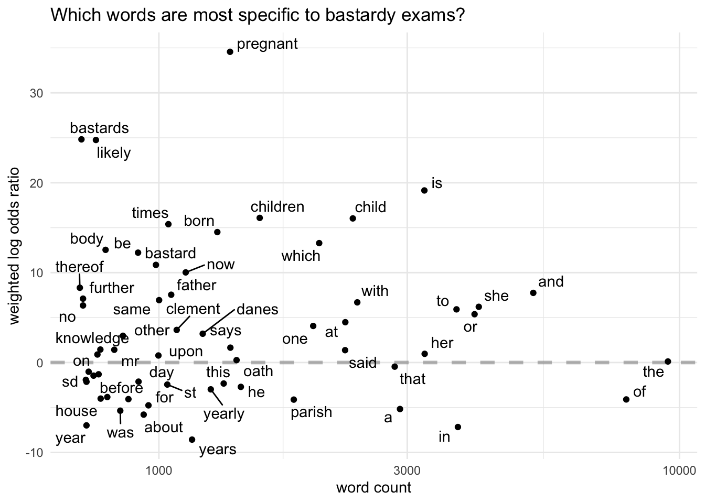
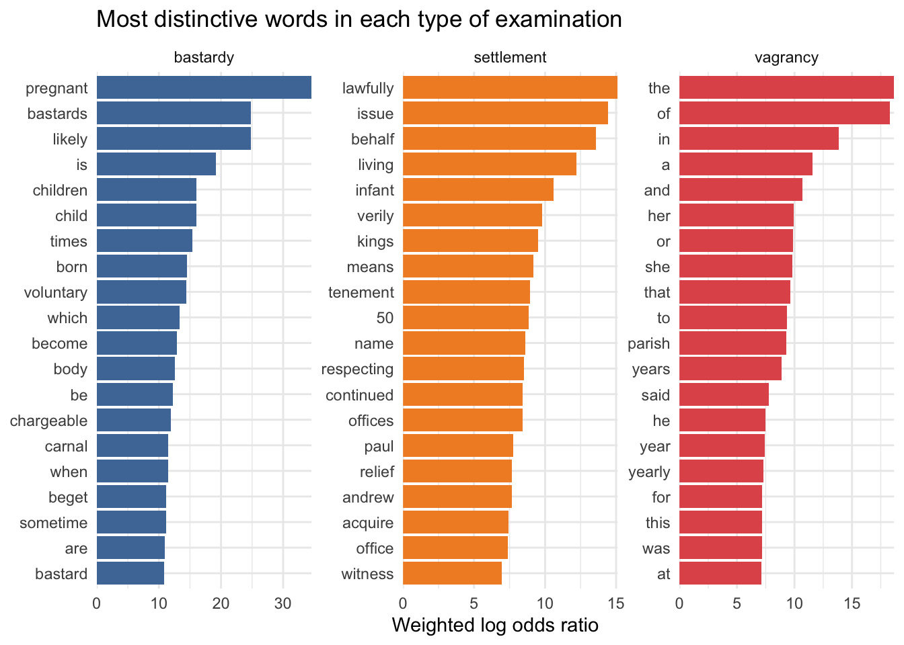
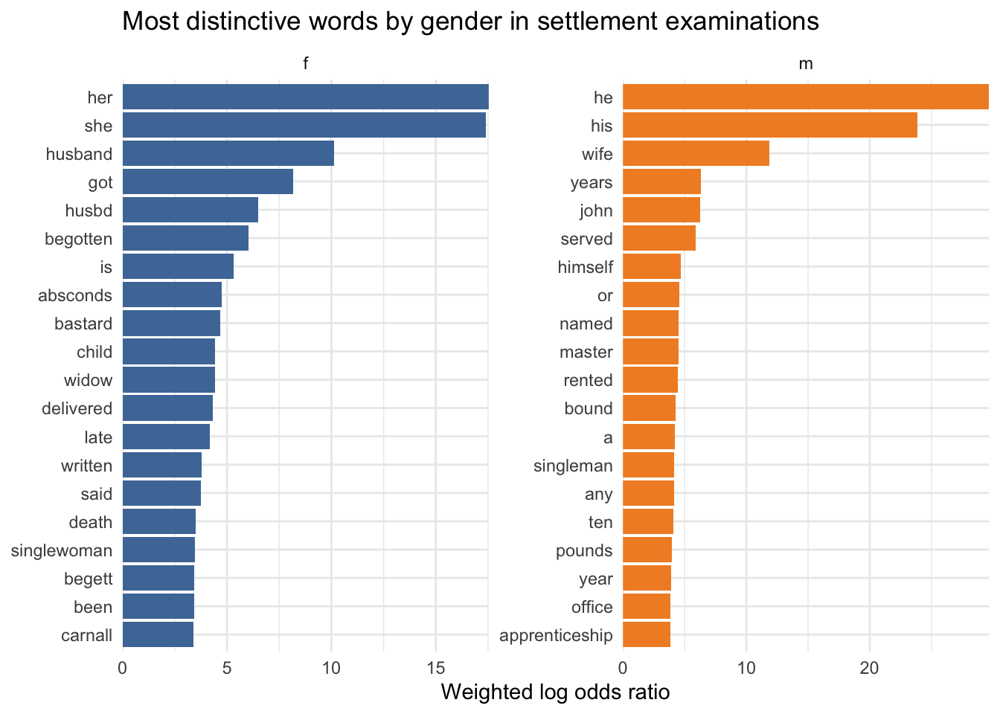
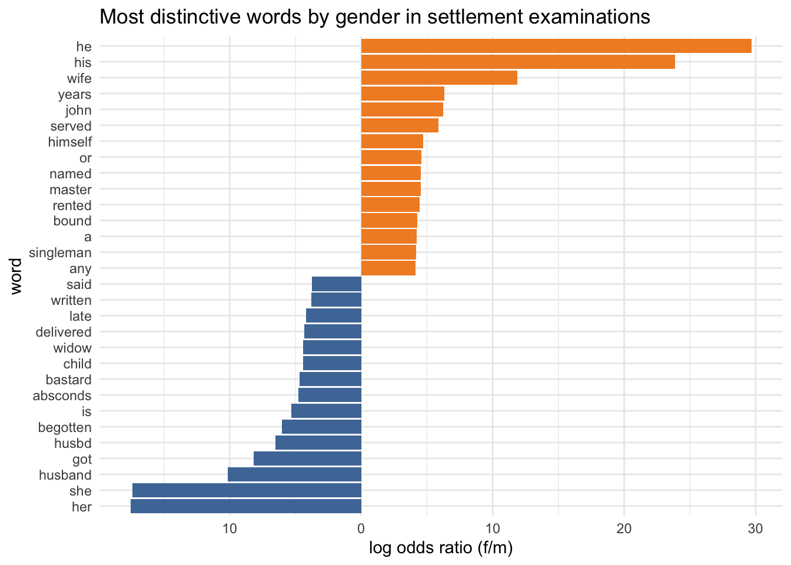
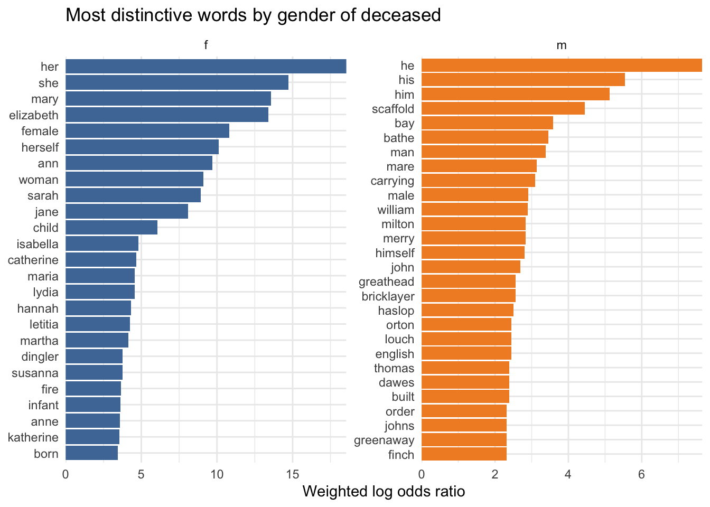

This post (which has obvious potential to be the first of a series, since I have a new one of these pretty regularly), is about my latest R enthusiasm. Recently I discovered “weighted log odds ratios” via Julia Silge’s blog post on the new tidylo package she’s developed with Tyler Schnoebelen, which is designed to facilitate their use in R alongside Julia’s tidytext package.
Log odds ratios are a measure for comparing word usage in two or more groups of texts - which words are more or less likely to appear in each group. Why weighted log odds? This helps to account for sampling and usage variability. Mark Liberman of Language Log:
The basic idea here is that we have two “lexical histograms” (i.e. word-count lists), taken from two sources X and Y whose patterns of usage we want to contrast. If we just compare naively estimated rates of usage, we’re going to end up with a bunch of unreliable comparisons between small counts, say comparing a word that X uses once and Y doesn’t use at all, or vice versa. We want to take account of the likely sampling error in our counts, discounting differences that are probably just an accident, and enhancing differences that are genuinely unexpected given the null hypothesis that both X and Y are making random selections from the same vocabulary.
Weighted log odds ratios have similar applications to TF-IDF, but they have a big advantage for the kind of thing I’ve tried to use that for previously, which is trying to compare groups of texts within a corpus, eg “male” and “female” petitions.
The problem is that if a word (or n-gram, etc) appears in all of your groups, which can be pretty common when you’re comparing a small number of groups, it’s given a TF-IDF score of 0, which is… not helpful. As explained by Tyler Schnoebelen [emphasis mine]:
One of the problems with using tf-idf for stylistic analysis is that if everyone uses [the terms being analysed] they’ll get a score of 0 even if some people use them a whole lot more than others. That’s because the “idf” in “tf-idf” is for inverse document frequency… The inverse document frequency is calculated as the natural log of the total number of documents (=authors, so 18) divided by the number of documents (authors) who use the phrase (in this case everyone uses it, so 18 again). The natural log of 18/18 = natural log (1) = 0. So you multiply the tf*0=0.
To explore what all that means, I’ve got three London Lives datasets to play with:
Pauper exams
Petitions
Coroners’ inquests
Code
library(scales) # additional scaling functions mainly for ggplot (eg %-ages)library(knitr)#library(kableExtra)library(readtext)library(quanteda)library(tidylo)library(tidytext)library(tidyverse)theme_set(theme_minimal()) # set preferred ggplot theme library(ggthemes)library(ggrepel)# pauper exams data## hmm, couple of dodgy lines in this, why have I not noticed before...llep_names_data <-read_tsv(here::here("site_data/ll/ep/llep_names_v1.tsv"), col_types =cols(exam_date=col_character(), date_of_birth=col_character(), bf_description=col_character(), snip_txt=col_character()))llep_exams_data <-read_tsv(here::here("site_data/ll/ep/llep_examinations_v1.tsv"), col_types =cols(exam_date=col_character()) ) |># oopsmutate(exam_date =str_replace(exam_date, "^0739-", "1739-"))## text files into one data frame llep_txt_data <-readtext(here::here("site_data/ll/ep/txts/*.txt"), docvarsfrom ="filenames", dvsep ="txt", docvarnames =c("exam_id")) |>as_tibble() |>mutate(text_extract =str_replace_all(text, "\\n+", " ")) |>mutate(text_extract =str_trunc(text_extract, 300)) |>select(exam_id, text, text_extract)# gender refers to "subjects" of exams - excluding gender of witnesses on behalf of paupers (eg for children)# exclude exams with mixed/unknown gender subjectsllep_exams <-llep_exams_data |>select(exam_id, parish_code, ex_on_behalf, exam_date) |>mutate(exam_year =as.numeric(str_sub(exam_date, 1,4))) |>inner_join(llep_names_data |>filter(exam_role1 %in%c("examinant", "exam_on_behalf_of")) |>add_count(exam_id, name="n_sub") |>group_by(exam_id) |>mutate(n_gen=n_distinct(gender)) |>ungroup() |>filter(n_gen==1) |>distinct(exam_id, n_sub, exam_type, gender), by="exam_id")llep_exams_words <- llep_exams |>inner_join(llep_txt_data, by="exam_id") |>arrange(exam_year, exam_date, exam_id) |># tokenizeunnest_tokens(word, text)llep_sett_gender_lo <-llep_exams_words |>filter(exam_type=="settlement") |>group_by(gender) |>count(word, sort =TRUE) |>ungroup() |>bind_log_odds(gender, word, n) |>mutate(log_odds2 =case_when( gender=="f"~-1*log_odds_weighted,TRUE~ log_odds_weighted )) llep_gender_lo <-llep_exams_words |>group_by(gender) |>count(word, sort =TRUE) |>ungroup() |>bind_log_odds(gender, word, n) llep_examtype_lo <-llep_exams_words |>group_by(exam_type) |>count(word, sort =TRUE) |>ungroup() |>bind_log_odds(exam_type, word, n) # for a quick kwicllep_corpus <-corpus( llep_txt_data |>select(doc_id=exam_id, text) )# petitions data llpp_data <-read_csv(here::here("site_data/llpp/LL_petitions_data_v2-0.csv")) |>filter(court !="OB") llpp_petrs_data <-read_csv(here::here("site_data/llpp/LL_petitions_petitioners_v2-0.csv"))# need to put this on github as it won't be available elsewherellpp_parish_data <-read_csv(here::here("site_data/llpp/llpp_petition_parish.csv"))# petitioners data - summary gender m, f; mixed fmllpp_petition_gender <-llpp_petrs_data |>filter(!gender=="unknown") |># only 2 unknownadd_count(ll_img, name="n_petr" ) |>count(ll_img, n_petr, gender) |>mutate(petition_gen =case_when( n_petr ==1~ gender, # 1 petitioner n_petr>1& n_petr==n ~ gender, # >1 petitioner, one genderTRUE~"fm" ) # >1 petitioner, mixed gender ) |>distinct(ll_img, n_petr, petition_gen) llpp <-llpp_data |>select(ll_img, year, court) |>mutate(decade = (year %/%10) *10 ) |>left_join(llpp_parish_data, by=c("ll_img"="img")) |>left_join(llpp_petition_gender, by="ll_img") |>mutate(pet_type =case_when( petition_gen=="f"~"female", petition_gen=="m"~"male",#petition_gen=="fm" ~ "female", parish_rem==1~"parish",TRUE~NA_character_ )) |>select(ll_img, year, decade, court, pet_type, n_petr, petition_gen)## sort out path in github version...llpp_txt_data <-readtext(here::here("site_data/llpp/sp/*.txt"), docvarsfrom ="filenames", dvsep ="txt", docvarnames =c("ll_img") ) |>as_tibble() llpp_txt_words <- llpp_txt_data |>inner_join(llpp , by="ll_img") |>select(ll_img:petition_gen, text) |>unnest_tokens(word, text)llpp_gender_lo <-llpp_txt_words |>rename(gender=petition_gen) |>filter(gender %in%c("m", "f")) |>group_by(gender) |>count(word, sort =TRUE) |>ungroup() |>bind_log_odds(gender, word, n) llpp_pet_type_lo <-llpp_txt_words |>filter(!is.na(pet_type)) |>group_by(pet_type) |>count(word, sort =TRUE) |>ungroup() |>bind_log_odds(pet_type, word, n) # inquests data inquest_texts_data <-readtext(here::here("site_data/ll/wa_inq_txt/*.txt"), docvarsfrom ="filenames", dvsep ="txt", docvarnames =c("img_inq_first") ) |>as_tibble() # summary datainquests_summary_data <-read_tsv(here::here("site_data/ll/wa_coroners_inquests_v1-1.tsv"), na="NULL", col_types =cols(doc_date =col_character()))# nb 5 in summary data which are not in texts (missing images/transcriptions)inquests <-inquest_texts_data |>inner_join(inquests_summary_data |>mutate(img_no =str_replace(first_img, "WACWIC", "")) |>mutate(img_inq_first =paste(inquisition_img, img_no, sep="_")) |>select(img_inq_first, everything()) , by="img_inq_first") |>mutate(doc_year =str_sub(doc_date, 1, 4), doc_year =as.numeric(doc_year)) |>mutate(decade = (doc_year %/%10)*10 ) |># simplify verdictsmutate(verdict =case_when(str_detect(verdict, "suicide") ~"suicide",TRUE~ verdict )) |>select(first_img, doc_date, doc_year, decade, parish, the_deceased, gender, verdict, cause_of_death, deceased_additional_info, lonlives_document_ref, text, img_inq_first, inquisition_img)inquests_words <-inquests |>unnest_tokens(word, text)inquests_verdicts_lo <-inquests_words |>filter(verdict !="undetermined") |>group_by(verdict) |>count(word, sort =TRUE) |>ungroup() |>bind_log_odds(verdict, word, n)inquests_gender_lo <-inquests_words |>filter(gender %in%c("m", "f")) |>group_by(gender) |>count(word, sort =TRUE) |>ungroup() |>bind_log_odds(gender, word, n)
Pauper examinations
This dataset contains 10729 examinations from two London parishes between about 1740 and 1800. There are 7925 exams from St Clement Danes and only 2558 from St Botolph Aldgate (a smaller parish). There are three types of examination, also very unevenly distributed: settlement exams (9630), bastardy exams (794) and vagrancy exams (59). If you’re not familiar with this type of record, there is a detailed explanation at this London Lives page.
To explore how log odds ratios work, let’s first take a look at bastardy examinations. The higher the log odds ratio, the more specific the word is to that examination type, compared to the other types. Conversely, a negative log odds ratio means that a word is less likely to appear in bastardy exams than in the others.
The chart shows only the 60 most frequently used words in bastardy exams, with less frequently used words towards the left and the most common to the right. (I haven’t filtered out any stopwords.)
Code
llep_examtype_lo |>filter(exam_type =="bastardy") |>top_n(60, n) |>ggplot(aes(n, log_odds_weighted, label = word)) +geom_hline(yintercept =0, lty =2,color ="gray50", alpha =0.5, linewidth =1.2) +geom_text_repel() +geom_point() +scale_x_log10() +labs(x ="word count",y ="weighted log odds ratio",title ="Which words are most specific to bastardy exams?")

The closer words are to 0, the less specific they are. So, it appears that “servant” (and related words, “hired”, “yearly”) is quite evenly spread across the corpus. Many common function words - “that”, “of”, “the” - and legal-ish words (“said”, “oath”) are also close to 0.
It may not seem much of a surprise that the word “pregnant” is the most distinctive word in bastardy exams, followed by words like “bastards”, “child” and “children”. But remember that log odds ratios aren’t just telling us about frequency (pregnant is less frequent than children or child). It also means those words are infrequent (at best) in the other exam types. In fact, none of them even makes it into the top 60 words for settlement exams (in which “child” is the highest at 72).
One problem (as usual with these documents) is distinguishing what might be genuinely interesting from the language of bureaucracy. For example, “voluntary” is another legal term, which is specific to bastardy exams, and “likely to become chargeable to the parish” (ie, the mother is poor and will be unable to support the baby herself) is also a standard phrase.
However, the scores of “clement” and “danes” might suggest that a higher proportion of these examinations come from that parish compared to St Botolph Aldgate. And that one’s quite easy to confirm:
What are the most distinctive words in each examination type?
Code
llep_examtype_lo |>group_by(exam_type) |>top_n(20, log_odds_weighted) |>ungroup() |>mutate(word =reorder_within(word, log_odds_weighted, exam_type)) |>ggplot(aes(word, log_odds_weighted, fill = exam_type)) +geom_col(show.legend =FALSE) +facet_wrap(~exam_type, scales ="free") +coord_flip() +scale_x_reordered() +scale_y_continuous(expand =c(0,0)) +scale_fill_tableau() +labs(y ="Weighted log odds ratio", x =NULL, title="Most distinctive words in each type of examination")

Note the differences in the log odds ratio scales, remembering that the higher the scores, the more distinctive the words are to that particular sub-corpus.
The smallest set, the vagrancy examinations, consist almost entirely of legal formula and individual names, but “labour” may be more interesting: does it refer to work or giving birth? I can take a quick look with a KWIC view (this is of the entire corpus; more work will be needed to break down by examination type):
[Code disabled as the function it uses is no longer available.]
There are 16 instances of “labour” in the whole examinations corpus, 9 of which are in vagrancy examinations (hence its high log odds ratio, even though the numbers are small); 11 refer to giving birth. 44 of the examined vagrants are female, so roughly (I’ll do these numbers properly later…) somewhere between a fifth and a quarter of their examinations were precipitated by them giving birth.
The bastardy examinations have the highest scores overall, which suggests to me that they have a middling-sized range of very specific words. One thing worth noting, I think, is the high presence of “is”, “be” and “are”, compared to “was” (and maybe “has”) in settlement exams. The latter are much more historical narratives - they can go back many years - while bastardy exams are much more focused on current events, and only the recent past.
“Years” and “year” is high up in settlement exams because that’s often a crucial part of establishing a right of settlement - the length of an apprenticeship or period in service. The same goes for “ten”, “pounds”, “rented”, etc. Possibly the most intriguing thing is that “husband” is the top term, and “wife” is also there but is less distinctive.
What about comparing gender? For this I’ll just look at settlement exams.
Code
llep_sett_gender_lo |>group_by(gender) |>top_n(20, log_odds_weighted) |>ungroup() |>mutate(word =reorder_within(word, log_odds_weighted, gender)) |>ggplot(aes(word, log_odds_weighted, fill = gender)) +geom_col(show.legend =FALSE) +facet_wrap(~gender, scales ="free") +coord_flip() +scale_x_reordered() +scale_y_continuous(expand =c(0,0)) +scale_fill_tableau() +labs(y ="Weighted log odds ratio", x =NULL, title="Most distinctive words by gender in settlement examinations")

You have to bear in mind that settlement examinations were in the main very narrowly focused on specific aspects of poor people’s lives - that’s to say, the criteria for earning a “settlement” which were mainly: apprenticeship or service, paying local taxes and renting property above a certain value, marriage, or birth.
So it’s actually quite interesting that “wife” is as high up in male exams as it is, since a man’s marriage had no bearing at all on his settlement (though it might tell us why parish authorities were worried about the likelihood of him becoming a “burden” on the parish). In contrast, a woman’s marriage was absolutely crucial information in this context; once married, her husband’s settlement was hers as well (and their children’s, until they were old enough to leave home). And so, words related to marriage are much more prominent in women’s examinations than in men’s.
There is more that could be said, but I think the presence of “mark” on the female side is also interesting - this will refer to signing with a mark, implying that women were less likely than men to be able to sign their own names. (We already know that’s the case for higher status women, but this looks like evidence that it’s also true of the poorest social groups.)
For some fun, I can also visualise it a bit differently:
Code
llep_gen_breaks <-pretty(llep_sett_gender_lo$log_odds2)llep_sett_gender_lo |>group_by(gender) |>top_n(15, log_odds_weighted) |>ungroup() |>mutate(word =fct_reorder(word, log_odds2)) |>ggplot(aes(word, log_odds2, fill = gender)) +geom_col(show.legend =FALSE) +coord_flip() +labs(y="log odds ratio (f/m)", x="word", title="Most distinctive words by gender in settlement examinations") +scale_fill_tableau(name ="", labels =c("f", "m")) +scale_y_continuous(breaks=llep_gen_breaks, labels =abs(llep_gen_breaks))

Petitions
The data comes from the London Lives Petitions Project, a corpus of about 10,000 petitions to magistrates between 1690 and 1800.
This graph compares three groups of petitions, which I’ve recently been thinking about: male, female, and “parish” petitions concerning contested pauper removals.
It seems very striking that female petitions use more varied and sometimes “archaic” spellings (eg “shee” and “herselfe”) than the other two groups do, and are more likely to use the first person. That implies - perhaps - that women are less able to employ professional scribes to write down their petitions.
The texts here are almost 3000 formal inquisitions, which described the circumstances of death and the jury verdict, from 18th-century Westminster coroners inquests. For more details of the dataset, see my previous blog post.
No comments here; I’ll let you ponder these for yourself.
Again, a comparison of gender (this time, the gender of the deceased):
Code
inquests_gender_lo |>filter(!word %in%c("is", "said", "or", "er")) |>group_by(gender) |>top_n(25, log_odds_weighted) |>ungroup() |>mutate(word =reorder_within(word, log_odds_weighted, gender)) |>ggplot(aes(word, log_odds_weighted, fill = gender)) +geom_col(show.legend =FALSE) +facet_wrap(~gender, scales ="free") +coord_flip() +scale_x_reordered() +scale_y_continuous(expand =c(0,0)) +scale_fill_tableau() +labs(y ="Weighted log odds ratio", x =NULL, title="Most distinctive words by gender of deceased")

And a comparison of the four main types of verdict:
Quite often, once I dig into a new enthusiasm more carefully, I learn more about its limitations (that happened with tf-idf…). What I’ve done here has been quite quick and dirty - in most cases I really need to think about some targeted stopwords, for a start - and some of these graphs seem to offer more useful insights than others. But I think there’s some really good food for thought here, and this method is likely to be one I’ll be using a lot in the future.
Resources
Almost all the data used in the post is publicly available and licensed for re-use: